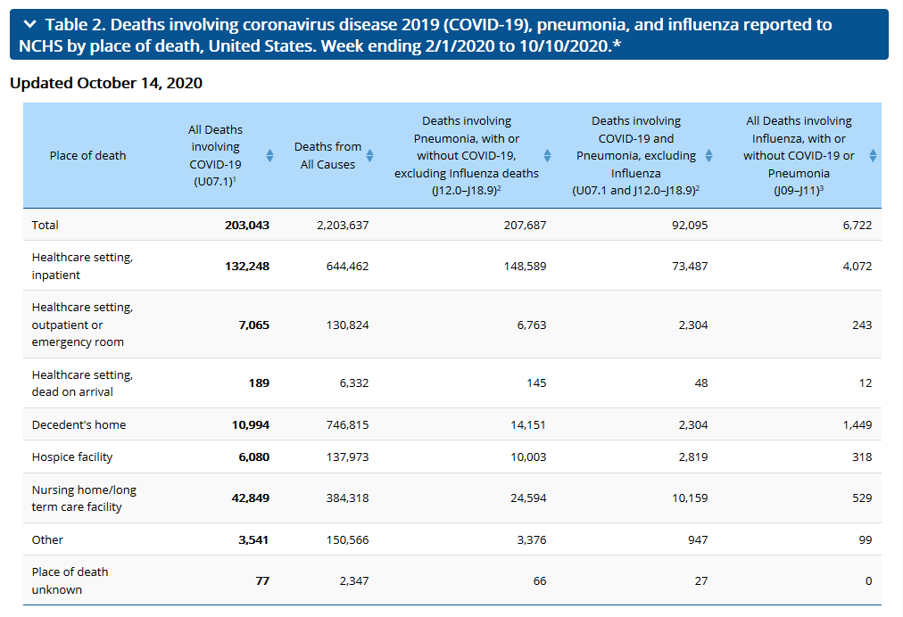

2 chinese boys died in PE wearing these masks. link
17 studies were done that showed no relationship between masks and protection against influenza infeciton. pjmedia
Dr. Hemant Sharma does a video explaining the side effects of long-term use (Chief of the Division of Allergy and Immunology at Children’s National). link
Faucci in the beginning says only wear if sick so why does everyone wear it now? link
Growing evidence that intubation and use of ventilators have contributed to the death rate. link
Several doctors give opinions on COVID and how media and government reacted horribly. link
cdc website itself even says that evidence is limited on their effectiveness. link
COVID is not causing us to die more.
CDC
shows that in 2018 there were 2,839,205 deaths. For 2020 CDC has a table chart showing 2,203,637 deaths to date (10/14/2020). This doesn't include deaths in Jan, but if
we add those in, there is a total of 2,441,841 deaths this year. 400,000 more deaths are needed
by the end of the year if we are to match the death rate of 2018. Death rates are going down significantly
since mid year. I'd calculate total deaths in 2020 to be from 2.8 million to 2.95 million.
